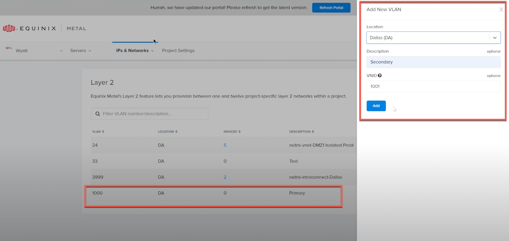
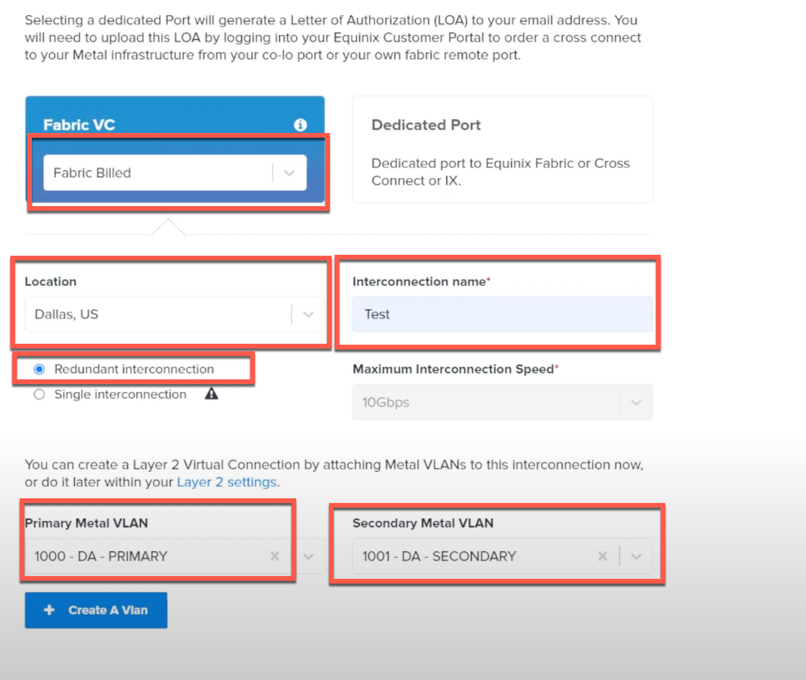
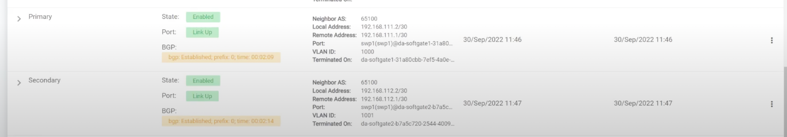

Creating an Interconnection to Equinix Fabric¶
Once you have successfully setup Netris on Equinix Metal, you may want to use it to connect your private networks from Equinix Fabric back to Metal.
Netris can easily manage the routing and other required VPC services for this.
Create VLANs in Metal
To be able to create an interconnect into Equinix Fabric, first you must create a pair of VLANs for the Primary and Secondary connections.
To do this, go to Equinix Console -> IP&Networks -> Layer 2. Click “Add Vlan”. Choose the location of your Netris Softgates, then use a couple of VLAN IDs that are unused.
In the example below, VLAN 1000 is used for Primary, and VLAN 1001 is used for the Secondary.
Request Interconnection
Now we are ready to request the Equinix Interconnection on the Equinix Metal side.
Go to Equinix Console -> IP&Networks -> Interconnections.
Click “Request New Interconnection”.
From here, under Fabric VC select “Fabric Billed”.
Choose the Location where your Netris Softgates are located.
Add an Interconnection name. This can be any name.
Choose “Redundant interconnection”.
Under “Primary Metal VLAN” select the VLAN created in the previous step, in this example it is VLAN 1000.
Under “Secondary Metal VLAN” select the VLAN created in the previous step, in this example it is VLAN 1001.
Then, finalize the request by clicking “Submit Interconnection Request”.
Once this is accomplished, use the token generated to connect your virtual Network Edge device to Equinix Metal. Setting up a connection on the Fabric side is outside the scope of this document. Once that is complete, the Interconnection will show as Active, and you may move onto creating BGP connections with the Network Edge Virtual Device.
Primary BGP Connection to Fabric Network Edge Device
Up to this point, a redundant pair of layer 2 connections have been created and connected back to an Equinix Fabric Network Edge device (or some other port with a router on the other end). To be able to utilize the redundancy of both connections, a BGP peering must be established over the two layer 2 VLANs.
On the Netris Controller, go to Net -> E-BGP, then click Add.
Fill in the following information:
Name: Choose any name
Site: Choose the site of your Equinix Project
V-Net: None
BGP Router: Choose the primary Softgate
VLAN ID: Choose the Primary VLAN ID created when creating the Interconnection in the previous steps
Neighbor AS: Choose the ASN configured on the Network Edge router
IP Family: IPv4
Local IP: Any /30 can be used. Using a Private IP is recommended.
Remote IP: Use the IP of the remote side.
Secondary BGP Connection to Fabric Network Edge Device
Now to create the backup/secondary connection.
On the Netris Controller, go to Net -> E-BGP, then click Add.
Fill in the following information:
Name: Choose any name
Site: Choose the site of your Equinix Project
V-Net: None
BGP Router: Choose the secondary Softgate
VLAN ID: Choose the Secondary VLAN ID created when creating the Interconnection in the previous steps
Neighbor AS: Choose the ASN configured on the Network Edge router
IP Family: IPv4
Local IP: Any /30 can be used. Using a Private IP is recommended.
Remote IP: Use the IP of the remote side.
Once completed, the EBGP status shoudl look something like this:
Note
At this point, you should have both BGP sessions up, but the link may show yellow if the Network Edge device is not advertising any routes back to the Netris Softgates. Once the Network Edge router begins sending routes from other connections, the status should turn green.